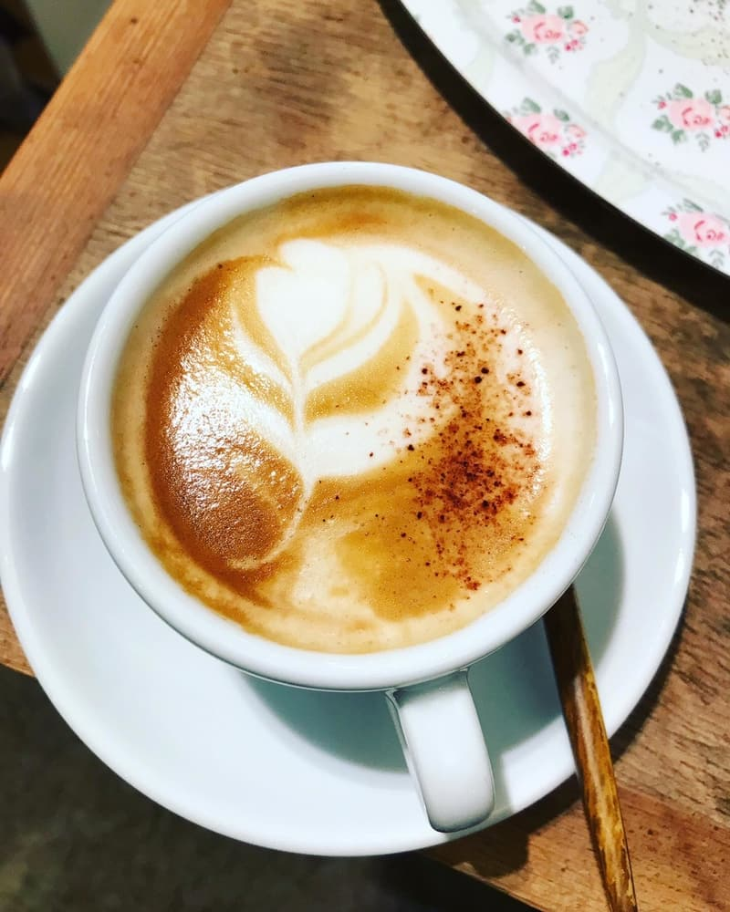
Heiße Getränke
Espresso, Kaffee, Tee, Matcha, Chai, heiße Schokolade und Goldene Milch.
Kaffeehaus im Viertel
Ein gemütliches Nachbarschaftscafé mit hausgemachtem Kuchen, Brot aus dem Ofen am Morgen und vielen kleinen Dingen, die einfach Freude machen.
Willkommen
Tante Emma ist aus einer einfachen Idee gewachsen: ein Laden, an dem man stehen bleiben, reden und den Tag ankommen lassen kann. Heute trifft man sich bei uns für den ersten Kaffee am Morgen, für ein Stück Kuchen am Nachmittag und für alles, was dazwischen passiert.
Wir backen jeden Morgen selbst, kaufen bei Menschen aus der Nähe ein und haben immer ein paar Dinge im Regal, die man so nirgends findet — Kerzen, Karten, Gläser, kleine Geschenke. Deshalb steht auf der Tür auch schöne Dinge.
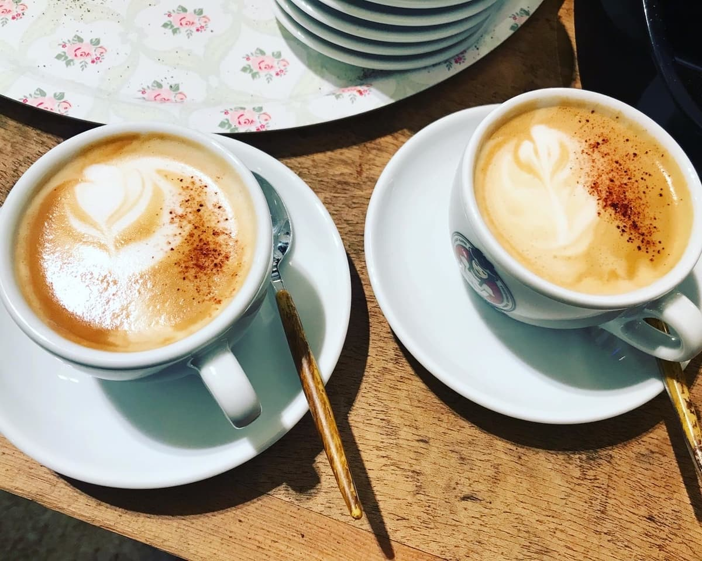
Hausmischung, täglich frischAus der Küche
Rhabarber mit Meringue, Biskuit mit saisonalem Obst, dunkle Schokoladen Tarte — bei uns steht jeden Tag etwas anderes in der Vitrine. Was hängt, entscheidet sich am Morgen, je nachdem, was gerade reif ist.
Wer uns vorher anruft, kann ein ganzes Stück zurücklegen. Und wer einen ganzen Kuchen braucht, sagt uns Bescheid — dann steht er fertig eingepackt bereit.
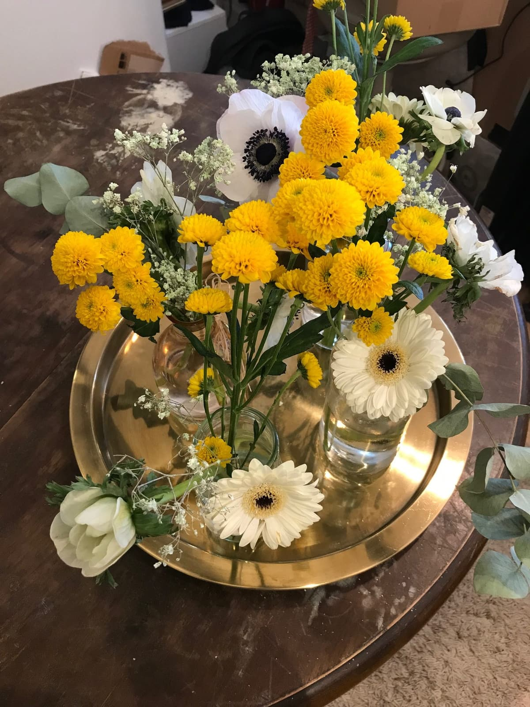
Blumen, Kerzen, kleine FundstückeEin Blick in die Vitrine
Eine kleine Auswahl — die volle Speisekarte mit Allergenhinweisen findet ihr auf der Karte.

Espresso, Kaffee, Tee, Matcha, Chai, heiße Schokolade und Goldene Milch.
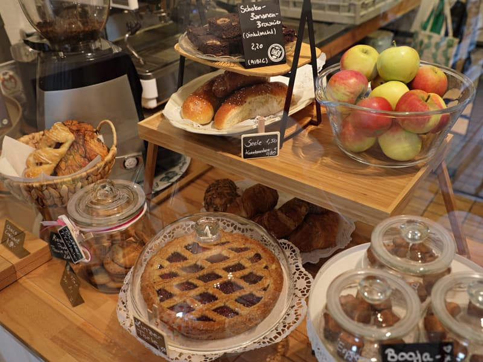
Jeden Tag frisch aus der Küche — Kuchen, Torten und Tarts, solange die Vitrine reicht.
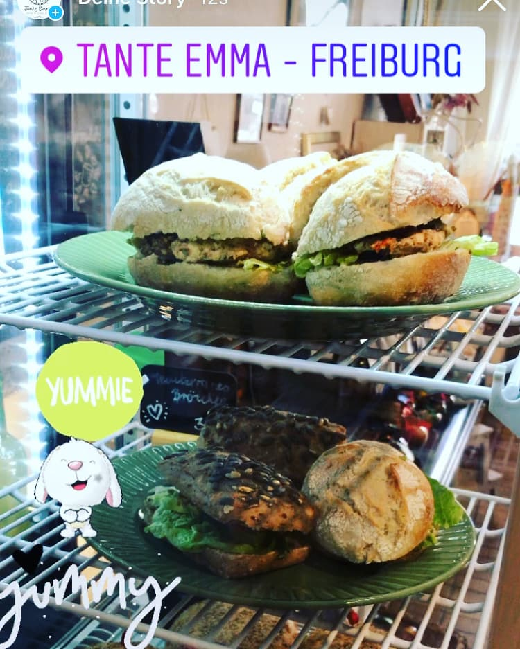
Frisch belegte Brötchen, Croissants und kleine herzhafte Begleiter für zwischendurch.
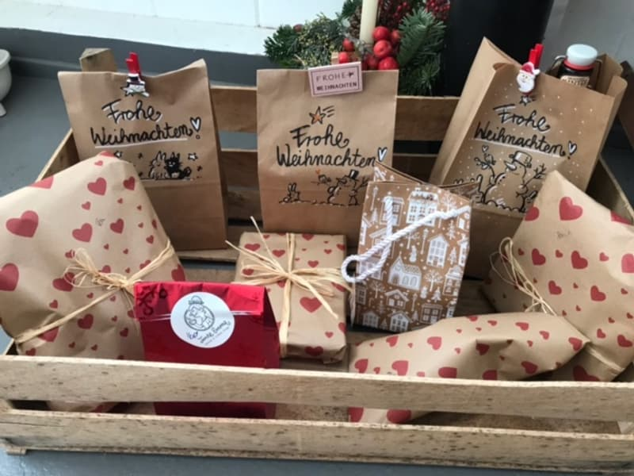
Kaffee zum Mitnehmen, Kerzen, Tassen und kleine Fundstücke — Dinge zum Verschenken.
Der Raum
Holz, warmes Licht, Farbe an den Wänden und ein Regal voller Dinge, die Menschen mitgebracht haben. Ein Ort zum Verweilen — mit genug Platz für Zeitung, Laptop oder nur eine Tasse.
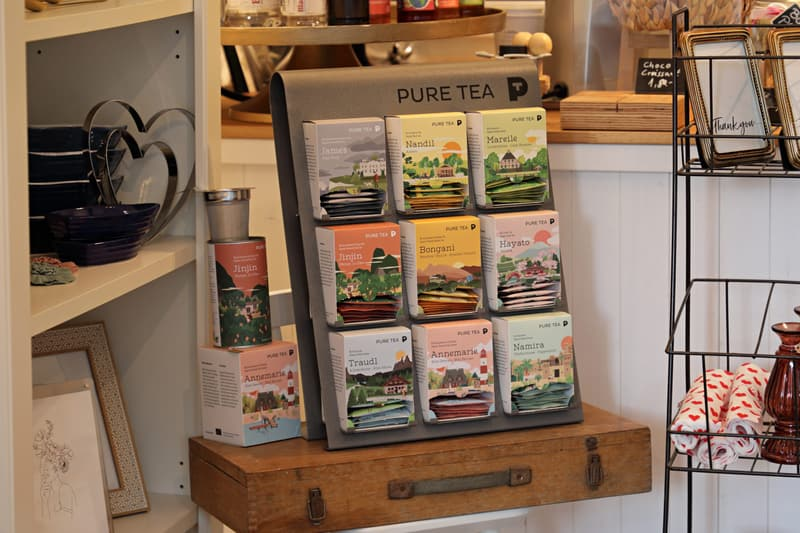
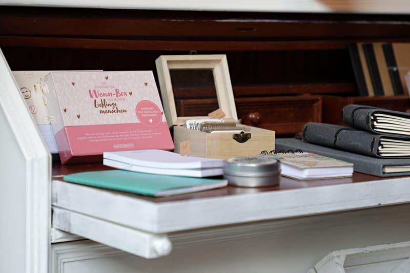
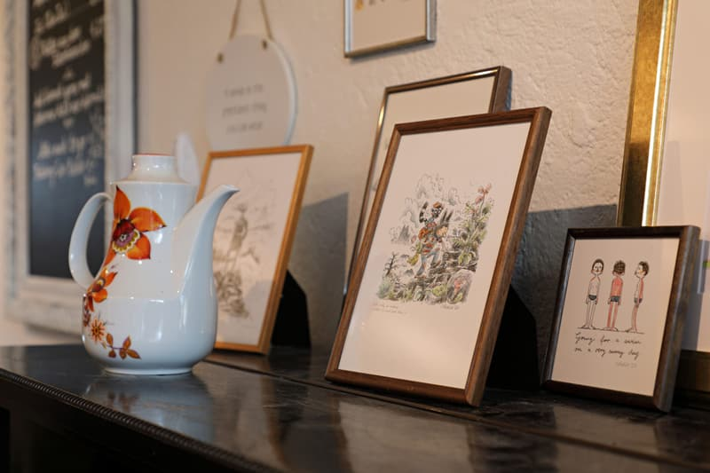
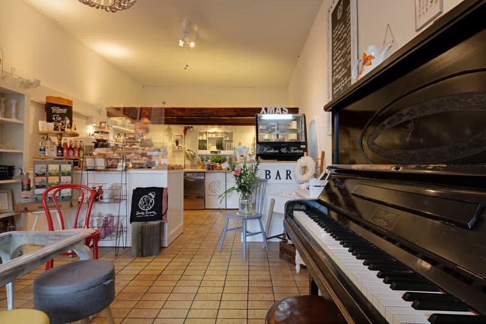
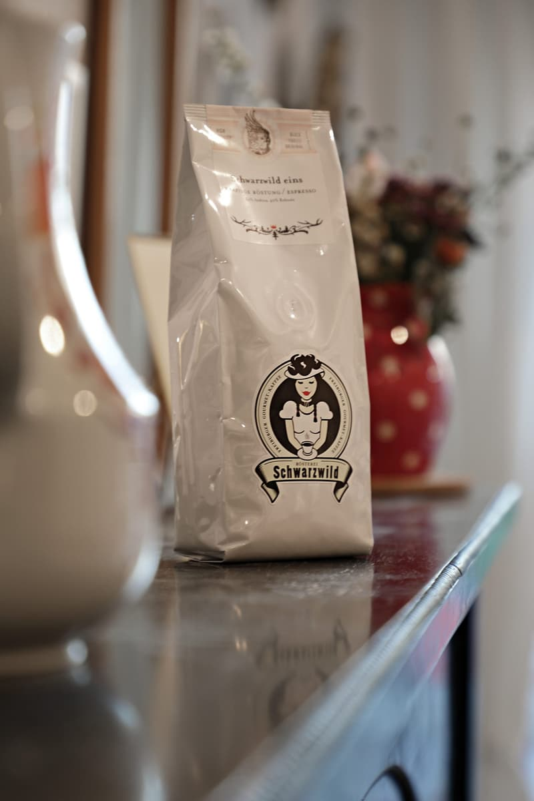
Vorbeikommen
Setzt euch an den Fensterplatz, holt euch Kuchen zum Mitnehmen oder ruft kurz an, wenn ihr einen ganzen Kuchen braucht.
Beides ist eine gute Idee. Die Speisekarte steht bereit — der Rest ergibt sich.